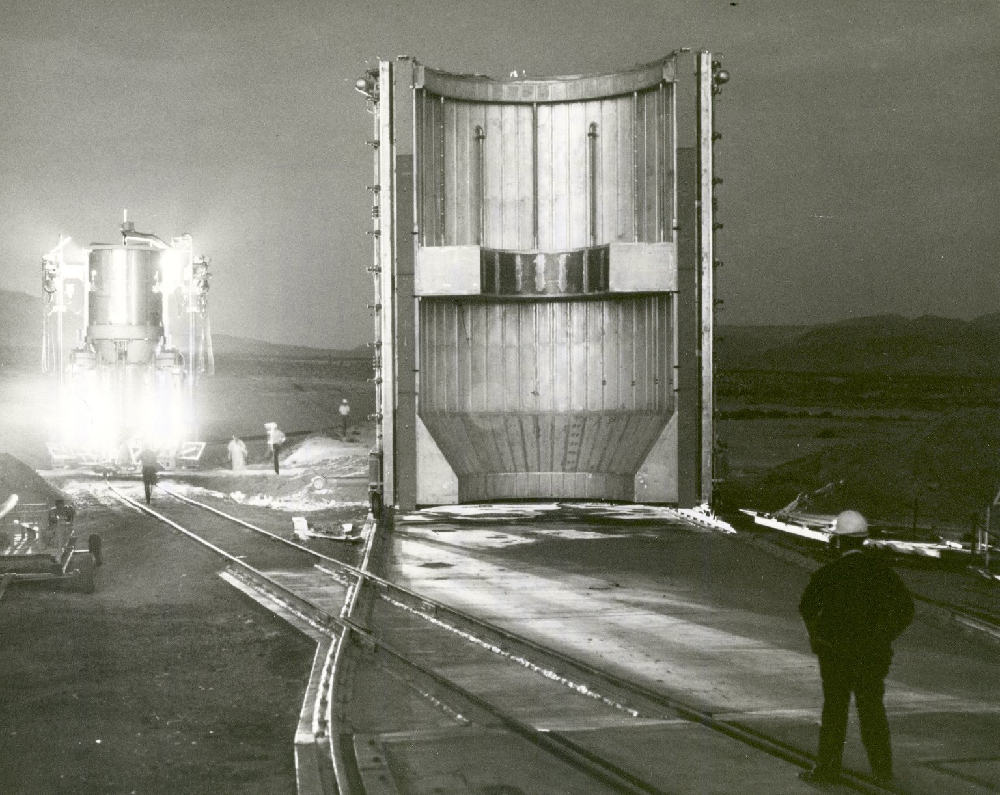
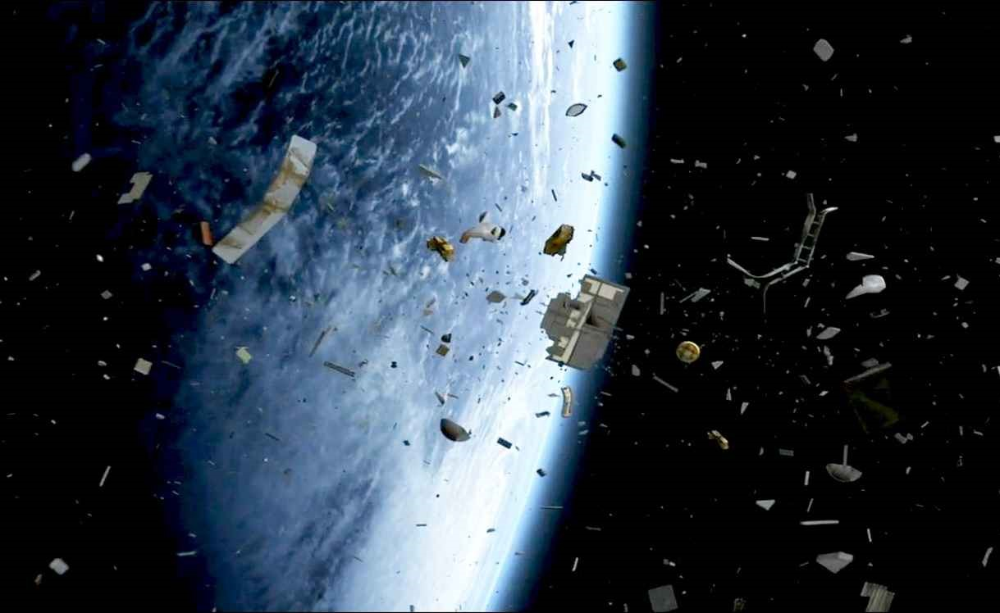
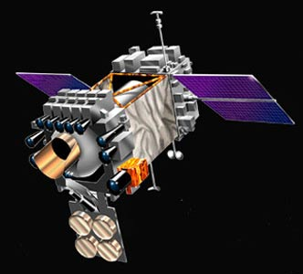
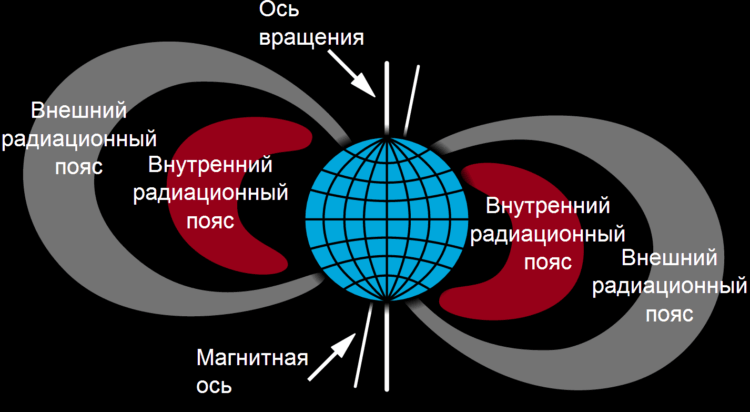
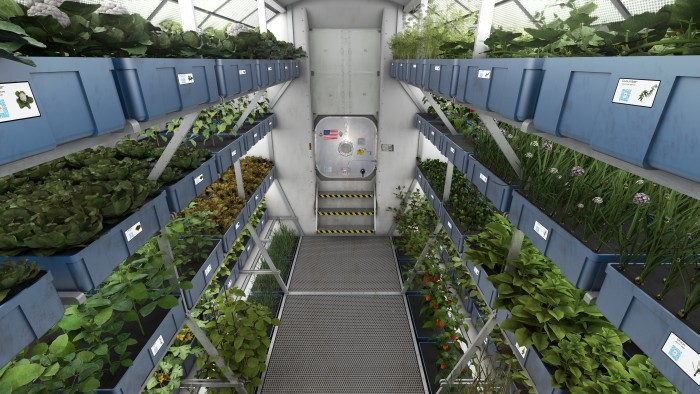
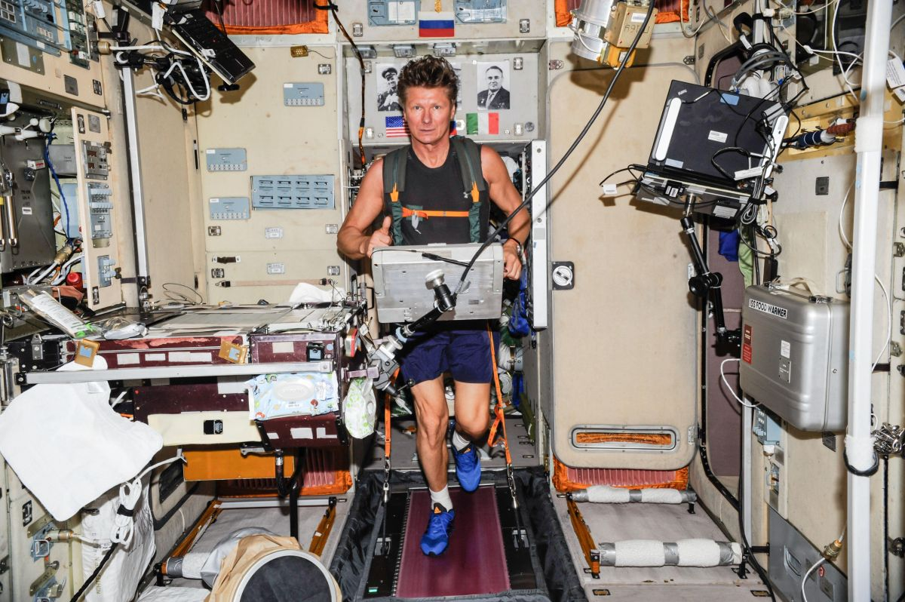
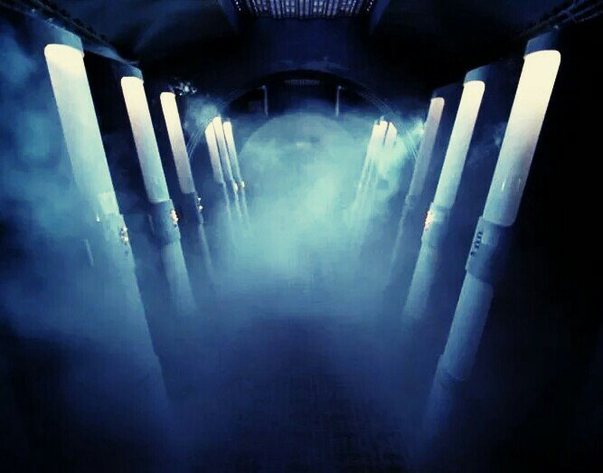
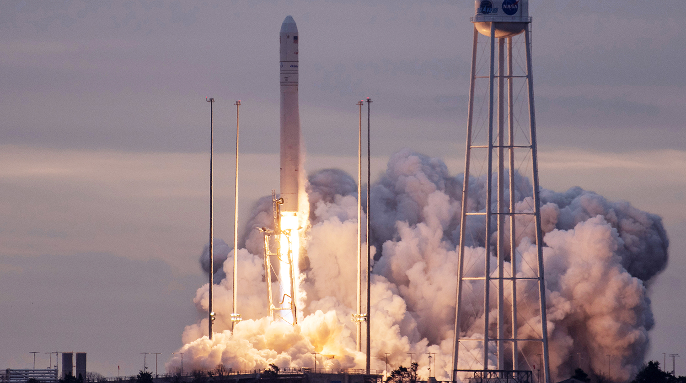
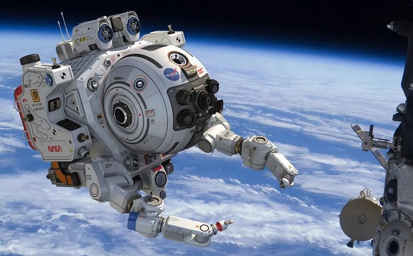

- Ракетные двигатели
- Космический мусор
- Астронавигация
- Космическая радиация
- Пища и питье
- Мышечная атрофия
- Психика
- Ресурсы
- Разведка
Оглавление
Проблемы современных космических аппаратов, и как следствие - проблемы освоения космоса
Проблема: ракетные двигатели

Нет ничего проще полёта в безвоздушном пространстве: ведь при путешествиях в космическом вакууме на ракету не действует сила трения. Основные проблемы возникают при запуске. Чем выше масса объекта, тем большую силу нужно применить для его перемещения.
×

Испытания первого ядерного ракетного двигателя в 1967 году.
Химическое ракетное топливо идеально подходит для первоначального ускорения, но керосин сгорает за считанные минуты. Полученное импульсное ускорение позволит добраться до лун Юпитера за 5—7 лет! Но следует задуматься о создании принципиально новых ракетных двигателей.
Основная причина того, что не используются ядерные ракетные двигатели — это так называемый Договор о космосе, который запрещает использовать ядерное вооружение за пределами Земли. В итоге из-за него любые миссии с ядерным топливом на борту проходят тщательную проверку на безопасность, поэтому в космосе обычно можно встретить лишь зонды с РИТЭГами — радиоизотопными термоэлектрическими генераторами, использующими тепловую энергию, выделяющуюся при естественном распаде радиоактивных изотопов и преобразующими её в электроэнергию с помощью термоэлектрогенератора.
А ведь ракеты с ядерным двигателем должны иметь на борту не просто «пассивный» радиоизотопный источник, а целый «активный» ядерный реактор с куда большим количеством топлива. И до сих пор в космосе побывало лишь около десятка кораблей с полноценными реакторами, обеспечивающими смешную выработку электричества около единиц киловатт, чего крайне мало для создания полноценной ядерной двигательной установки. В США, например, лишь в 2019 году администрация Трампа выпустила новую директиву, которая позволяет запускать в космос ракеты с мощными ядерными реакторами. Это и позволяет теперь НАСА создавать такие ракеты — разумеется, в соответствии со всеми рекомендациями по безопасности.
Проблема: космический мусор

"Космическое минное поле"
×

Космический мусор
К сожалению, проблема космического мусора весьма актуальна. Сеть станций наблюдения за космическим пространством США (US Space Surveillance Network) одновременно отслеживает около 17 000 объектов размером с мяч, вращающихся на разных орбитах вокруг Земли со скоростью более 8 километров в секунду. Если учитывать различные обломки и объекты менее 10 сантиметров, эта цифра увеличивается до полумиллиона! Части пусковых адаптеров, крышки объективов, мельчайшие частицы отслоившейся краски могут нанести непоправимый вред жизненно важным системам корабля.
И если от подобных обломков корабли защищены многослойными щитами Уиппла из металла и кевлара, спасти космический аппарат от столкновения с вышедшим из строя спутником не представляется возможным. А ведь на орбите Земли вращается около 4 000 подобных «зомби»! Безусловно, Центр управления полётами прокладывает наиболее безопасный маршрут, но отслеживание траекторий движения космического мусора — задача не из лёгких.
Проблема: астронавигация

Почему в космосе нет GPS?
×

Сеть Космического Наблюдения Соединенных Штатов
Сеть дальней космической связи — это международная сеть радиотелескопов и средств связи, расположенная в Калифорнии, Австралии и Испании. На сегодняшний день она является единственным средством навигации в космическом пространстве. Любые запуски — от студенческих спутников, собранных на «коленке», до сложнейшей автоматической межпланетной станции NASA «Новые горизонты» (New Horizons), продирающейся сквозь пояс Койпера, — полностью зависят от корректной работы и ориентации этой сети. Сверхточные атомные часы на Земле отмеряют время, за которое сигнал проходит от наземной станции до зонда и обратно, а специальные навигационные системы учитывают эту разницу для вычисления точного положения космического аппарата.
Однако с увеличением количества миссий растёт и нагрузка на сеть дальней космической связи. Основная панель управления полётами всё чаще оказывается полностью загруженной. NASA предпринимает всё возможное, чтобы снизить нагрузку на центр управления и навигации. Прежде всего, нам необходимо оборудовать все космические аппараты атомными часами — это вдвое сократит время передачи сигнала с борта космического корабля на Землю и даст возможность производить вычисления с помощью одиночной передачи. Инженеры уверены: установка лазеров с повышенной пропускной способностью позволит обрабатывать большие пакеты данных, включая фотографии и видеосообщения.
Но чем дальше космический корабль удаляется от Земли, тем менее надёжным становится этот метод. Давно известно, что радиоволны распространяются со скоростью света, но передача сигнала в глубокий космос займёт долгие минуты и часы. Космонавты смогли бы ориентироваться по звёздам, подобно древним мореплавателям, но звёзды находятся слишком далеко и не дают представления о реальном местоположении космического корабля.
Джозеф Гуинн (Joseph Guinn), эксперт по навигации в глубоком космосе, предлагает разработать автономную систему навигации для будущих космических миссий. Подобная система будет собирать и обрабатывать изображения целей путешествия и близлежащих объектов, используя их взаимное расположение для триангуляции координат космического аппарата. При этом отпадает необходимость использования земных систем навигации.
«На Земле эта проблема решается просто, — рассуждает Гуинн. — Устанавливаете GPS-приёмник в автомобиль — и готово!». Джозеф предлагает использовать подобную систему для позиционирования и навигации в глубоком космосе и называет её DPS (Deep Space Positioning System) — по аналогии с привычной земной системой GPS.
Проблема: космическая радиация

Наша родная планета заботливо укутана атмосферой и обладает собственным магнитным полем; вне этой колыбели нас поджидает смертельный танец субатомных частиц, пляшущих на околосветовых скоростях. Космическая радиация — смертельно опасная штука. Излучение может «наградить» нас катарактой, его связывают с болезнью Альцгеймера, оно также приводит к ухудшению работы мозга, в частности, памяти. Кроме того, считается, что генетические ошибки, появляющиеся из-за воздействия таких частиц при делении клеток, могут значительно увеличивать риски возникновения раковых опухолей.
×

Околоземная радиация
При столкновении субатомных частиц с атомами алюминия, составляющими обшивку космического аппарата, ядро последних распадается и происходит выброс сверхбыстрых частиц. Этот процесс называется «вторичная радиация». «Очевидно, что металлическая обшивка — не самое удачное решение», — рассуждает Насер Баргути (Nasser Barghouty) из Центра космических полётов имени Джорджа Маршалла, находящегося в ведении NASA.
Как ни странно, но нам помогут пластики. Они обладают рядом замечательных качеств: лёгкие и прочные, в них полно атомов водорода, которые не способствуют возникновению вторичной радиации ввиду малого размера ядра. В настоящее время NASA проводит испытания различных видов пластиков, созданных для защиты космических аппаратов и скафандров от радиации.
Есть и более футуристичный способ защиты: магниты. Учёные из Европейского проекта «Сверхпроводящий щит от космической радиации» (Space Radiation Superconducting Shield) трудятся над созданием сверхпроводящего материала из диборида магния для защиты космонавтов от ионизирующего излучения в дальних космических рейсах. Эффект сверхпроводимости возникает при весьма низких температурах (около −263 градусов Цельсия).
Проблема: пища и питьё

К сожалению, на Марсе пока нет супермаркетов
×

Выращивание еды на МКС
В августе прошлого года обыкновенный салат-латук стал настоящим деликатесом. По крайней мере, для космонавтов Международной космической станции, которые полакомились несколькими листьями салата, впервые выращенными на борту исследовательской лаборатории. Однако снять полноценный урожай в условиях невесомости — задача не из лёгких. В космосе вода не сочится сквозь почву, а собирается в летающие повсюду пузыри. Инженерам пришлось разработать специальную систему керамических трубок, которые будут смачивать корни растений.
«Ближайший аналог подобной системы — это статуэтка для выращивания чиа», — рассказывает ботаник Рэймонд Уилер (Raymond Wheeler) из Космического центра имени Кеннеди.
Другая проблема — свободное место. Пространство в современных космических аппаратах весьма ограничено. Многие овощи как будто созданы для тесных и узких пространств космической станции, но учёные работают над созданием генномодифицированного карликового сливового дерева, которое будет достигать всего 60 сантиметров в высоту. Разнообразить диету космонавтов белками, жирами и углеводами можно с помощью картошки и арахиса.
Однако без воды все усилия будут напрасны. Система переработки выделяемых организмом жидкостей в питьевую воду на Международной космической станции нуждается в периодическом ремонте и обслуживании. Экипажам межпланетных экспедиций вряд ли придётся рассчитывать на быструю доставку запасных частей. И тут нам опять не обойтись без помощи ГМО-технологий. Инженер Майкл Флинн (Michael Flynn) из научно-исследовательского центра имени Эймса в NASA ведёт работу над созданием фильтра очистки воды на основе генномодифицированных бактерий. Майкл любит сравнивать его с работой человеческого организма.
«Если отринуть всё лишнее, люди — это ходячие системы водоочистки с полезным ресурсом в 75—80 лет,
— шутит он.
— Бактериальный фильтр способен восполнять запасы воды подобно нашим внутренностям».
Проблема: мышечная атрофия и потеря
костной массы

Состояние невесомости пагубно влияет на организм человека. Отсутствие гравитации подавляет иммунные клетки, препятствует их нормальной жизнедеятельности, а эритроциты попросту разрывает на части. Космонавтам на Международной космической станции предписано заниматься физкультурой ежедневно два раза по часу, но они всё равно стремительно теряют костную массу. Искусственная гравитация могла бы решить все эти проблемы разом.
×

Занятия спортом на МКС
Бывший астронавт Лоренс Янг (Laurence Young) проводит испытания центрифуги для тренировки космонавтов в своей лаборатории Массачусетского технологического института. Испытуемые ложатся набок на платформу и начинают вращать ногами педали на стационарном колесе, а вся конструкция хитроумного изобретения постепенно раскручивается вокруг своей оси. Результирующая сила воздействует на ноги космонавтов, отдалённо напоминая гравитационное воздействие.
Тренажёр Янга слишком мал и его нельзя использовать более двух часов в день. Чтобы на борту звездолёта появилась постоянная гравитация, весь космический аппарат должен стать гигантской центрифугой. Корпус корабля можно выполнить в форме гантели с двумя камерами, соединёнными связующей рамой. Чем большее количество грузов мы сможем выводить на орбиту, тем меньше будут связаны руки у конструкторов и им не придётся изобретать колесо заново.
Проблема: психологическое здоровье

Безумие и межпланетные путешествия: что общего?
×

Капсулы для криогенной заморозки
Чтобы спасти жизнь больного во время инсульта или инфаркта, врачи значительно снижают температуру тела пациента для замедления метаболизма и уменьшения ущерба, вызванного нехваткой кислорода. Подобный трюк должен сработать и в космосе. Ведь для космического безумия нужно совсем немного: возьмите межпланетное путешествие длиною в год (по крайней мере), добавьте проживание в стеснённых условиях космического корабля, плохую еду и отсутствие личного пространства.
Джон Брэдфорд (John Bradford) уверен: нам стоит хорошенько об этом поразмыслить. Будучи президентом инженерно-технической фирмы SpaceWorks Enterprises, Inc. (SEI) и соавтором отчёта NASA по длительным межпланетным экспедициям, Брэдфорд считает, что криогенная заморозка экипажа позволит убить сразу двух космических зайцев: она даст возможность значительно сэкономить запасы пищи, воды и воздуха на борту, а заодно поможет экипажу звездолёта сохранить холодный ум и здравый смысл.
«Если мы хотим носить гордое звание межпланетного вида, нам срочно следует заняться созданием технологии стазиса», — размышляет учёный.
Пролема: ресурсы

Если гора алюминия не идёт к космонавту, он добудет её на месте
×

Грузовой корабль Cygnus
Когда первые космические караваны отправятся в долгое путешествие к звёздам, они будут загружены припасами под завязку. Но невозможно взять с собой всё. Конечно, у нас будет возможность снабдить поселенцев семенами, генераторами кислорода, станками и оборудованием для создания инфраструктуры. Но будущим колонизаторам предстоит самим собирать урожай и производить материальные ценности.
К счастью, космос сможет обеспечить их всем необходимым.
«Любая планета — это периодическая система химических элементов в миниатюре, — объясняет планетолог Ян Кроуфорд (Ian Crawford) из Биркбека (Лондонский университет). — Разница лишь в концентрации этих веществ».
На Луне полно алюминия. На Марсе обнаружены огромные запасы диоксида кремния и оксида железа. При наличии соответствующих технологий, пионеры космоса смогут добывать углерод, платиновую руду и воду на близлежащих астероидах. В том случае, если бластеры и бурильное оборудование окажутся слишком тяжёлыми, чтобы взять их с собой на борт, первопроходцам придётся научиться извлекать эти богатства с помощью других технологий: выплавки, микробов, способных поедать руду, или магнитов. NASA всерьёз заинтересовалось технологией трёхмерной печати, которая позволяет распечатывать целые здания и избавит будущих колонистов от необходимости везти с собой кучу строительного оборудования. Но в конечном итоге судьбу будущего поселения будет определять выбор места посадки и ресурсы небесного тела. Тёмная сторона Луны всегда привлекала человечество.
«Миллионы лет обратная сторона нашего спутника подвергалась непрерывной астероидной бомбардировке», — рассказывает инженер программы «Спейс Шаттл», Анита Гейл (Anita Gale). — Может статься, что там полно новых полезных ископаемых и сырья». Но прежде чем человечество отправится в долгое путешествие к экзопланете у звезды Kepler-438 в созвездии Лира, ему предстоит многому научиться.
Проблема: разведка

Собаки помогли нам колонизировать Землю и у них есть все шансы прижиться на Марсе. Но для полномасштабной межпланетной экспансии нам нужен новый лучший друг человека — робот!
×

Робот для проведения космических работ
Колонизация планеты потребует нечеловеческих усилий: роботы же смогут вкалывать без устали сутки напролёт, выполнять тяжёлую работу. По крайней мере, пока и в теории. Современные человекоподобные роботы слишком громоздки, они едва могут самостоятельно передвигаться по Земле. Логично предположить, что роботам будущего нужно максимально отличаться от нас. Космическим ковбоям больше подойдёт лёгкий управляемый бот с клешнями в форме экскаваторного ковша.
Робот-экскаватор Прототип машины NASA, предназначенной для копания льда на Марсе. Конечности робота вращаются в различных направлениях, что помогает избавиться от опрокидывания в ходе работы.
Что касается тонкой ручной работы, здесь людям пока нет равных. Проворные человеческие пальцы — лучший инструмент для подобных видов деятельности. Безусловно, многое зависит и от экипировки. Современные скафандры предназначены для условий невесомости и не подходят для космического туризма на экзопланетах. NASA разработало опытный образец скафандра Z-2, который обладает гибкими сочленениями и шлемом с круговым обзором. Данный прототип предназначен для ремонтных работ любой сложности, в нём вполне возможно починить обрыв самого тонкого провода.
После тяжёлого трудового дня нет ничего лучше, чем вытянуться в автоматическом вездеходе и отправиться домой, под уютный купол.